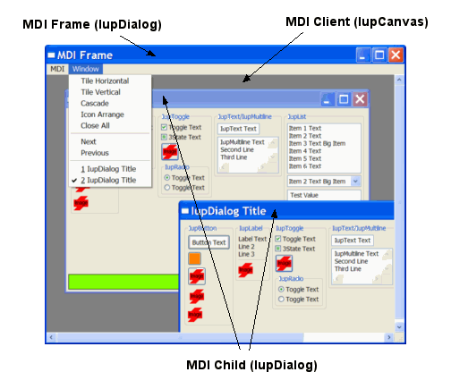

Creates a dialog element. It manages user interaction with the interface elements. For any interface element to be shown, it must be encapsulated in a dialog.
Ihandle* IupDialog(Ihandle *element); [in C] iup.dialog{element: ihandle} -> (elem: ihandle) [in Lua] dialog(element) [in LED]element: Identifier of an interface element.
This function returns the identifier of the created dialog, or NULL if an error occurs.
BORDER: Shows a thick border around the dialog. Default: "YES". Used only in the creation. Can not be changed after that.
CURSOR: Defines a cursor for the dialog.
ICON: Dialog’s icon.
MAXBOX: Requires a maximize button from the window manager. Creation-only attribute.
MENU: Associates a menu to the dialog.
MENUBOX: Requires a menu box from the window manager. Creation-only attribute.
MINBOX: Requires a minimize button from the window manager. Creation-only attribute.
RESIZE: Allows interactively changing the dialog’s size. Creation-only attribute.
SIZE: Dialog’s size. Differently from other interface elements, the following values can be defined for width and height:
- "FULL": Defines the dialog’s width (or height) equal to the screen's width (or height)
- "HALF": Defines the dialog’s width (or height) equal to half the screen's width (or height)
- "THIRD": Defines the dialog’s width (or height) equal to 1/3 the screen's width (or height)
- "QUARTER": Defines the dialog’s width (or height) equal to 1/4 of the screen's width (or height)
- "EIGHTH": Defines the dialog’s width (or height) equal to 1/8 of the screen's width (or height)
Default: the smallest size that allows viewing the dialog.
The dialog’s size has precedence over the smallest size required by its children (either if it was specified in its creation or in run-time). Attributing a NULL value to SIZE or RASTERSIZE (in C) in a dialog will recompute its size according to its children.
TITLE: Dialog’s title. On Motif, if it is not defined, the dialog will not be properly displayed.
STARTFOCUS: Name of the dialog element that must receive the focus right after the dialog is opened.
DEFAULTENTER: Name of the button activated when Enter is hit.
DEFAULTESC: Name of the button activated when Esc is hit.
X: Dialog’s horizontal position on the screen, in pixels.
Y: Dialog’s vertical position on the screen, in pixels.
SHRINK: Allows changing the elements’ distribution when the dialog is smaller than the minimum size.
PARENTDIALOG: Makes the dialog be treated as a child of the specified dialog.
FULLSCREEN
Makes the dialog occupy the whole screen. All dialog details, such as border, maximize button, etc, are removed. Possible values: YES, NO. In Motif you may have to click in the dialog to set its focus.
WIN_SAVEBITS [Windows Only]
This attribute is only consulted when the dialog is mapped. When this attribute is true (YES), the dialog stores the original image of the desktop region it occupies (if Windows has enough memory to store the image). In this case, when the dialog is closed or moved, a redrawing event is not generated for the windows that were shadowed by it. Its default value is YES.
TOPMOST [Windows Only]
This attribute puts the dialog always in front of all other dialogs in all applications. Default: NO.
TOOLBOX [Windows Only]
This attribute makes the dialog look like a toolbar. It is only valid if the PARENTDIALOG attribute is also defined. Default: NO.
CLIPCHILDREN [Windows Only]
Modifies the way the dialog and its children are redrawn.
When option YES is selected, the area occupied by the children in the dialog is not redrawn, thus preventing the matrix and the canvas from blinking when a resize is made. Usually this brings better performance, but in some cases it may bring a performance reduction, as every time the dialog needs to be redrawn all children are redrawn as well. Default: YES.
BRINGFRONT [Windows Only]
This attribute makes the dialog the foreground window. Use "YES" to activate it. Useful for multithreaded applications.
COMPOSITED [Windows Only]
This attribute controls if the created window will have an automatic double buffer for all controls. Default is "NO". Creation-only attribute.
LAYERED [Windows Only]
This attribute sets and removes the layered style bit. Use "YES" to activate it. Default is "NO". The LAYERALPHA attribute must also be set, just after this one.
LAYERALPHA [Windows Only]
This attribute sets the dialog transparency alpha value. The dialog must have LAYERED=YES. Valid values range from 0 (completely transparent) to 255 (opaque).
NATIVEPARENT [Windows Only]
Makes any window created in the system (even from outside IUP) able to be parent of a IUP dialog. The value provided should be a valid window handle (HWND.)
PLACEMENT [Windows Only]
Changes how the dialog will be shown. Values: "FULL", "MAXIMIZED", "MINIMIZED" and "NORMAL". After IupShow the attribute is set to "NORMAL" if it was different. "NORMAL" is equivalent of not defining the attribute. FULL is simular to FULLSCREEN but all the dialog client area covers the screen area, menu is not included and decoration is not removed, they just stay out of the screen.
HELPBUTTON [Windows Only]
Inserts a help button in the same place of the maximize button. It can only be used for dialogs without the minimize and maximize buttons, and with the menu box. For the next interaction of the user with a control in the dialog, the callback HELP_CB will be called instead of the control defined ACTION callback. Possible values: YES, NO. Default: NO.
TRAY [Windows Only]: When set to "YES", displays an icon on the system tray.
TRAYIMAGE [Windows Only]: System tray icon
TRAYTIP [Windows Only]: Tray icon's tooltip text
HIDETASKBAR [Windows Only]
When set to "YES", hides the dialog from the task bar. Must be used with TRAYICON attribute.
CONTROL [Windows Only]: Embeds the dialog inside another window. Creation-only attribute.
MDIMENU [Windows Only]: Name of a IupSubmenu to be used as the Window list of a MDI frame window. The system will automatically add the list of MDI child windows there. Used in the IupDialog configured as a MDI frame. This dialog must contains one IupCanvas configured with MDICLIENT=YES.
MDICHILD [Windows Only]: Configure this dialog to be a MDI child window. The MDICLIENT attribute must also be set. Each MDI child is automatically named (IupSetHandle) to "mdichild%d", where "%d" is a sequencial number.
MDICLIENT [Windows Only]: Name of the IupCanvas used as MDI client window. The MDI frame window must have one and only one MDI client window.
MDIARRANGE [Windows Only]: Action to arrange MDI child windows. Possible values: TILEHORIZONTAL, TILEVERTICAL, CASCADE and ICON (arrange the minimized icons).
MDIACTIVATE [Windows Only]: Name of a MDI child window to be activated. If value is "NEXT" will activate the next window after the current active window. If value is "PREVIOUS" will activate the previous one.
MDIACTIVE [Windows Only]: Returns the the name of the current active MDI child.
MDINEXT [Windows Only]: Returns the name of the next available MDI child. Must use MDIACTIVE to retrieve the first child. If the application is going to destroy the child retreive the next child before destroying the current.
MDICLOSEALL [Windows Only]: Action to close and destroy all MDI child windows. The CLOSE_CB callback will be called for each child.
IMPORTANT: When a MDI child window is closed it is automatically destroyed, the application can override this returning IUP_IGNORE in CLOSE_CB.
SHOW_CB: Called right after the dialog is opened, minimized or restored from a minimization.
MAP_CB: Called right after the element is mapped.
CLOSE_CB: Called right before the dialog is closed.
DROPFILES_CB: [Windows Only] Action generated when one or more files are dropped from the Windows Explorer in the dialog.
TRAYCLICK_CB: [Windows Only] Called right after the mouse button is pressed or released over the tray icon.
int function(Ihandle *n, int but, int pressed, int dclick); [in C] elem:trayclick_cb(but, pressed, dclick: number) -> (ret: number) [in Lua]but: identifies the activated mouse button. Can be: 1, 2 or 3. Note that this is different from the BUTTON_CB canvas callback definition.
pressed: indicates the state of the button.
dclick: indicates a double click.Returning CLOSE closes the dialog.
MDIACTIVATE_CB: [Windows Only] Called when a MDI child window is activated. Only the MDI child receive this message. It is not called when the child is shown for the first time.
int function(Ihandle *n); [in C] elem:mdiactivate_cb() -> (ret: number) [in Lua]
Except for the menu, all other elements must be inside a dialog to interact with the user. Therefore, an interface element will only be visible when its VISIBLE attribute and that of the dialog are "YES".
A menu that is not associated to a dialog can interact with the user by means of the IupPopup function.
Values attributed to the SIZE attribute of a dialog are always accepted, regardless of the minimum size required by its children. For a dialog to have the minimum necessary size to fit all elements contained in it, simply define NULL (in C) to SIZE. In the case of partial dimensions, a specified dimension is always used, while a non-defined dimension uses the smallest necessary size for the elements in the corresponding direction.
In Motif the decorations ICON, MENUBOX, MINBOX, MAXBOX, RESIZE and BORDER will work only if the running Window Manager supports the Motif WM hints.
The MDI support is composed of 3 components: the MDI frame window (IupDialog), the MDI client window (IupCanvas) and the MDI children (IupDialog). Altough the MDI client is a IupCanvas it is not used directly by the application, but it must be created and included in the dialog that will be the MDI frame, other controls can also be available in the same dialog, like buttons and other canvases composing toolbars and status area. The following picture illustrates the e components:
